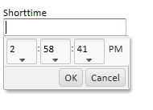

Grid and Dialog Component - Time Picker
You can now enable a Time Picker for Short-time fields, and for Character fields. To turn on the Time Picker for these field types, check the 'Time Picker' property in the new 'Time Picker Properties' section.